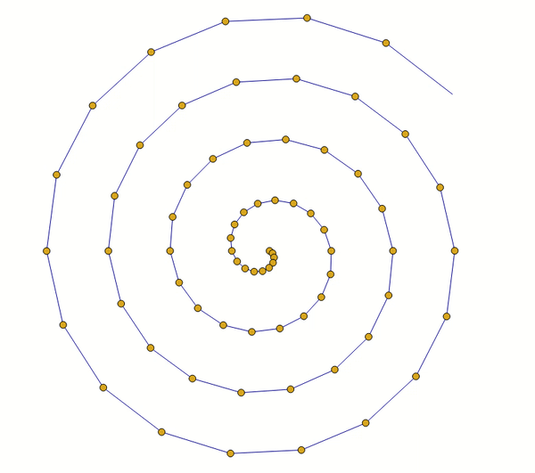
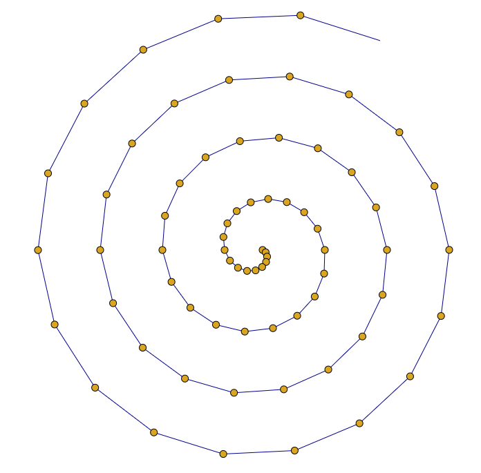

A Espiral de Arquimedes é uma curva fácil de fazer.
Imagine que vou andando ao longo de uma reta, e marcando uma série de pontos a cada vez – é como se um raio r estivesse crescendo.

Imagine agora, que a reta está girando a uma velocidade constante – cada reta está num ângulo theta.

A localização dos pontos forma a Espiral de Arquimedes.
O raio e o ângulo theta vão crescendo a velocidade constante.
As coordenadas de cada ponto são r*cos(theta) e r*sin(theta).
Teste aqui:
Veja também:
Forgotten Lore - Ideias Técnicas com uma pitada de filosofia.